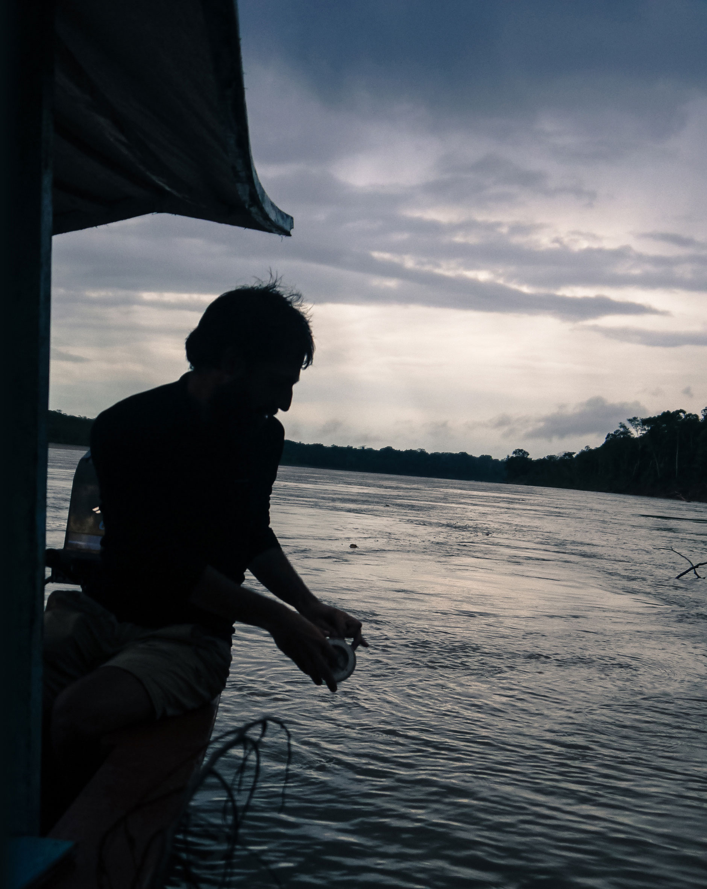

Ivan Probst
On my way to Neverland, always learning,
always creating. Ever naive, I …
tweet
the world
take
random photos
read
many books
was travelling
these places
... and apparently fishing, but just for the sake of the picture
(we can talk about it obviously:
ivan.probst[at]gmail.com
).